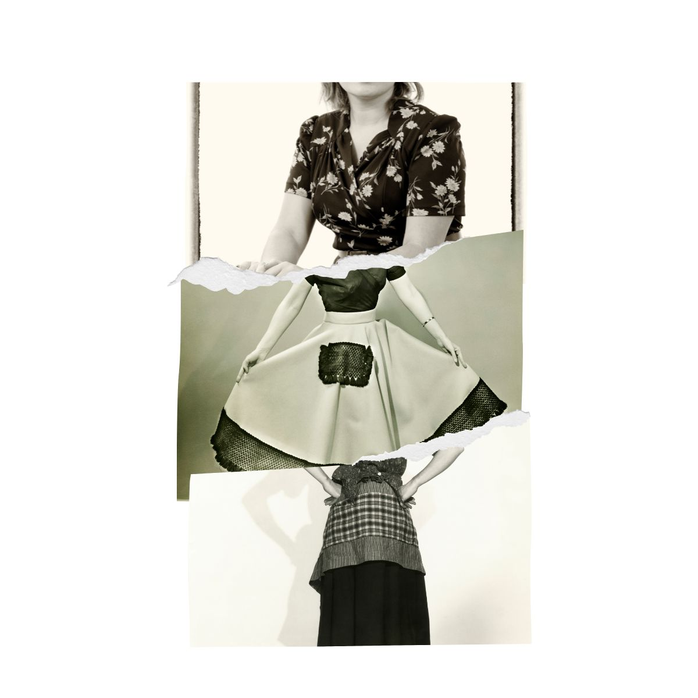
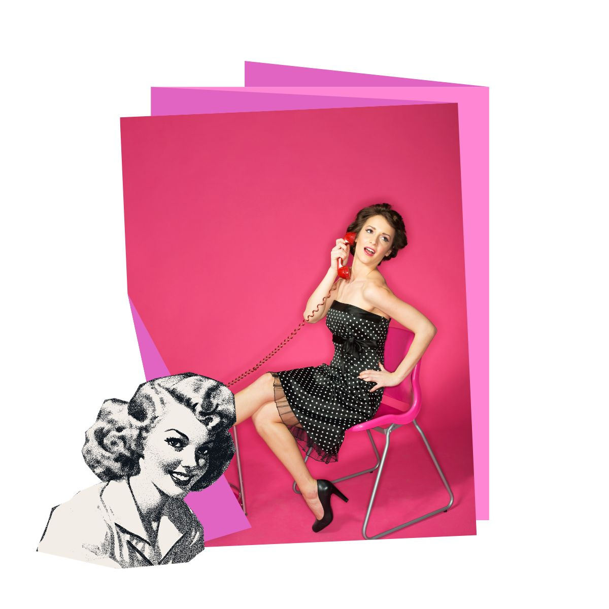

A moda dos anos 1950 foi marcada por um retorno à feminilidade e elegância após os anos de guerra. As mulheres usavam vestidos rodados, saias plissadas e blusas ajustadas, com cinturas marcadas e ombros suaves.
O estilo era caracterizado por cores vibrantes, estampas florais e tecidos leves, refletindo uma época de prosperidade e otimismo.

Os homens continuaram a usar ternos, mas com cortes mais ajustados e tecidos mais leves. O estilo masculino também refletia a elegância e sofisticação da época, com gravatas finas e sapatos polidos.
Em resumo, a moda dos anos 1950 representava um período de renovação e otimismo, com roupas que enfatizavam a feminilidade e a elegância.
